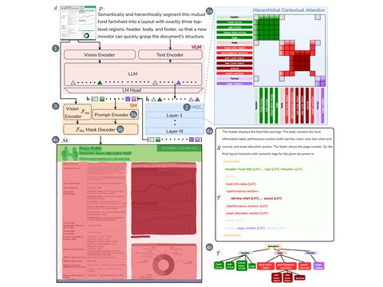
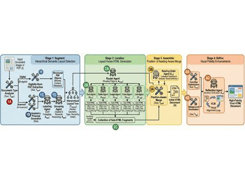
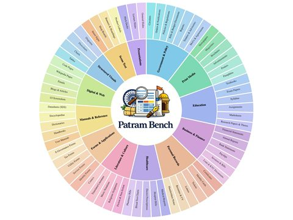
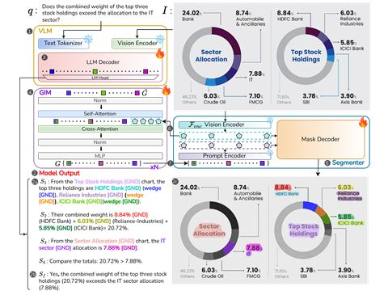
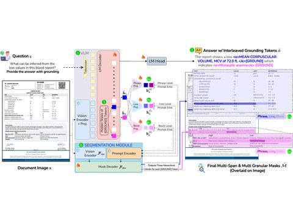

Publications
Selected work in document intelligence, visual grounding, vision-language models, multilingual datasets, and document reconstruction. My research has appeared at venues including CVPR, ECCV, and ICDAR.

Anirudh Srinivasan*, Venkata Kesav Venna*, Srihari Bandarupalli*, R Raghuveer, Sai Madhusudan Gunda, Ravi Kiran Sarvadevabhatla
Poster at ECCV '26
description
Reframes document layout understanding as promptable, open-set hierarchical segmentation. The system generates layout trees and dense masks using a VLM plus segmentation model with hierarchy-aware grounding, trained on 2.5M documents, 400K+ labels, and 80M masks.

Anirudh Srinivasan*, R Raghuveer*, Venkata Kesav Venna*, Tallapragada Sreevatsa, Aryan Jain, Sahithi Kukkala, Ravi Kiran Sarvadevabhatla
Oral at ICDAR '26, pp. 505-522
description
An agentic document parsing workflow that generates visually faithful HTML from documents. It combines a segmenter, router and specialist agents, a reading-order agent, and a reflection agent, reaching 93% visual fidelity and strong scores on VFDR-Bench.

Anirudh Srinivasan*, Pratyush Jena*, Arya Topale, Venkata Kesav Venna, Ravi Kiran Sarvadevabhatla
Poster at ICDAR '26, pp. 626-642
description
A comprehensive Indian document understanding benchmark with 52,607 documents, 23 languages, 13 domains, 71 classes, 52 tasks, and 2.4M+ QA annotations across OCR, parsing, layout, and multi-hop DocVQA. It also introduces multilingual robustness metrics and evaluates 29+ VLMs.

Sai Madhusudan Gunda*, Jyothi Swaroopa Jinka*, Hrithik Sagar Rachakonda*, Aryan Jain, Venkata Kesav Venna, Anirudh Srinivasan, Ravi Kiran Sarvadevabhatla
Spotlight at ECCV '26
description
A mask-based grounded chain-of-thought framework for document QA that supports multiple grounding types across text and visual elements. The model is designed for chart-heavy and layout-rich documents where answers require both reasoning and fine-grained localization.

Venkata Kesav Venna*, Sai Madhusudan Gunda*, Jyothi Swaroopa Jinka†, Hrithik Sagar Rachakonda†, Anirudh Srinivasan, Ravi Kiran Sarvadevabhatla
Poster at CVPR '26, pp. 23685-23695
CVPR 2026 workshops: DataMFM · MMFM5 · GRAIL-V (Highlight)
description
A VLM for grounded document intelligence that answers DocVQA questions with interleaved grounding tokens and pixel-level masks. It introduces multi-span, multi-granular, and multi-type grounding over textual and graphical elements, scaling to 200K-325K documents and 1.5M-2M grounded QA pairs.